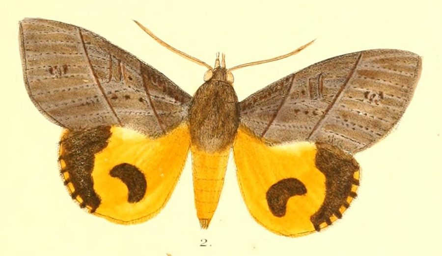

कजेटा फल-भेदक पतंगाCajeta Fruit-piercing Moth
Eudocima cajeta · Erebidae · INS-0225

- Scientific name वैज्ञानिक नाम
- Eudocima cajeta (Cramer, 1775)
- Family कुल
- Erebidae
- Hindi हिंदी
- कजेटा फल-भेदक पतंगा
- Local names स्थानीय नाम
- cajeta fruit-piercing moth, kajeta phal-bhedak patanga, eudocima cajeta, kajeta patanga
- Status here यहाँ की स्थिति
- native
- Movement आवागमन
- Resident, here all year
- Known from कहाँ दर्ज
- Others have published records from the wider Awadh–Purvanchal plain, none yet from Basti–Ayodhya अवध–पूर्वांचल से दूसरों के प्रकाशित अभिलेख, बस्ती–अयोध्या से अभी नहीं
- IUCN IUCN
- not evaluated
- Review समीक्षा
- not yet reviewed
When to look कब देखें
Present all year. साल भर मौजूद।
Tell it apart from इनसे अलग पहचानें
कजेटा फल-भेदक पतंगा / Cajeta Fruit-piercing Moth
Eudocima cajeta (Cramer, 1775) — Erebidae
कजेटा फल-भेदक पतंगा — बागों और वनों में पाया जाने वाला एक बड़ा और मजबूत रात्रिचर पतंगा। इसके आगे के पंख सूखे पत्ते जैसे कत्थई-हरे रंग के होते हैं, जबकि पिछले पंख चमकीले नारंगी-पीले और उन पर चौड़ी काली पट्टी होती है। इसकी सूंड बहुत सख्त और कांटेदार होती है, जिससे यह पके आम और अमरूद के छिलके में छेद करके मीठा रस पीता है।
Quick Identification त्वरित पहचान
| Feature | Description |
|---|---|
| Habit | Robust, heavy-bodied fruit-piercing moth with cryptic forewings |
| Forewing | Leaf-like brown to olive-green with faint oblique discal lines |
| Hindwing | Bright golden-yellow with a broad black marginal band and comma mark |
| Proboscis | Heavily sclerotised, barbed at apex for piercing tough fruit rinds |
| Larva | Velvety dark caterpillar with conspicuous lateral eye-spots on abdominal segments |
Field tip: Look on ripening orchard fruits after dusk with a torch, especially where citrus or mango trees grow near tangled wild climbing vines.
हिंदी — कैसे पहचानें: आगे के पंख सूखे पत्ते जैसे, पिछले पंख नारंगी-पीले जिन पर चौड़ा काला घेरा होता है, और एक मजबूत सूंड जो फलों में छेद करती है।
Morphology आकारिकी
Adult description: Head and thorax dark reddish-brown to greenish-grey; abdomen bright orange-yellow above with a dark terminal segment. Forewing cryptic, resembling a withered leaf, varying from olive-brown to warm reddish-ochreous with delicate transverse striations and an oblique postmedial line running from apex towards the inner margin. Hindwing rich cadmium-yellow or orange, bordered by a broad marginal fuscous-black band containing small pale submarginal specks, and marked with a dark curved discal lunule.
Mouthparts: The adult proboscis is heavily armoured with tearing hooks and rasping spines at its tip, functioning like a drill that perforates thick fruit skins.
Larval morphology: Full-grown caterpillar is stout and cylindrical, dark brown to velvety black, bearing brilliant ocelli (eye-spots) on the fourth and fifth abdominal segments that mimic vertebrate eyes when threatened.
हिंदी: अगले पंख सूखे पत्ते जैसे भूरे और पिछले पंख चटक पीले-नारंगी होते हैं। इसकी सूंड इतनी सख्त होती है कि यह मोटे छिलके वाले फल में भी सुराख कर देती है।
Behaviour & Ecology व्यवहार और पारिस्थितिकी
Eudocima cajeta is strictly nocturnal. During daylight hours, adults rest motionless among foliage or inside orchard undergrowth, where their leaf-like forewings provide exceptional camouflage against predators.
Flight commences shortly after dusk, with moths displaying swift, powerful flight directed towards ripening fruit odors. Unlike most Lepidoptera, which feed only on nectar or tree sap exuding from existing wounds, adult fruit-piercing moths create their own punctures. The moth grips the fruit firmly and drills its barbed proboscis through the rind, sucking internal juices for extended periods.
Caterpillars feed exclusively on the leaves of wild woody climbers. When alarmed, the larva elevates its anterior segments and inflates its thoracic region, displaying large lateral false eyes to startle insectivorous birds.
हिंदी: यह पतंगा दिन के समय घने पत्तों में छिपा रहता है और रात होते ही फलों की महक पाकर उड़ता है। यह अपनी सूंड से पके फल को छेदकर अंदर का गूदा और रस चूसता है।
Life Cycle / Phenology जीवन चक्र
| Season / Month | Stage & Activity |
|---|---|
| July–August (Monsoon) | Adults emerge and mate; females lay eggs on wild climbing vines |
| August–September | Caterpillars feed voraciously through five instars on vine leaves |
| September–October | Pupation in a loose cocoon woven between folded foliage |
| October–November | Peak adult emergence coinciding with autumn fruit ripening |
| December–February | Overwintering as quiescent adults in sheltered woodland crevices |
Development from egg to adult requires several weeks during warm, humid monsoon conditions. Multiple overlapping broods occur through the monsoon and post-monsoon period in northern plains.
हिंदी: बरसात के दिनों में मादा बेलों के पत्तों पर अंडे देती है। सुंडी पत्तों को खाकर बड़ी होती है और पत्ते मोड़कर प्यूपा बनाती है। जाड़ों में पतंगे पेड़ों की दरारों में छिपकर आराम करते हैं।
Host Plants or Prey आहार
- Larval Host Plants: Wild woody climbers in the family Menispermaceae, including Tinospora cordifolia (giloy), Cocculus hirsutus, and Stephania japonica.
- Adult Fruit Food: Sucks juices from ripening fruits of Mango, guava, citrus, pomegranate, and Jamun.
हिंदी: इसकी सुंडी गिलोय और अन्य जंगली बेलों के पत्ते खाती है। वयस्क पतंगा आम, अमरूद, जामुन और नींबू के पके फलों का रस पीता है।
Predators / Natural Enemies शत्रु
- Invertebrate Enemies: Praying mantids, large orb-weaver spiders, and assassin bugs prey on adults; larval parasitoid tachinid flies attack caterpillars.
- Vertebrate Predators: Insectivorous bats (Pipistrellus), Spotted Owlet, and arboreal geckos catch flying adults at night.
हिंदी: चमगादड़ और उल्लू रात में उड़ते हुए पतंगों को पकड़ते हैं। बगीचों की बड़ी मकड़ियां और परजीवी मक्खियां भी इन्हें नष्ट करती हैं।
Agricultural / Human Relevance कृषि प्रासंगिकता
- Orchard damage: Adults pierce ripening fruits, creating entrance wounds that lead to secondary bacterial and fungal fruit rot, causing premature fruit drop in mango, guava, and citrus orchards.
- Management practice: Traditional orchardists manage fruit-piercing moths by bagging individual high-value fruit clusters, eliminating wild Menispermaceae creeper hosts around orchard perimeters, and using nocturnal light traps or bait traps.
- Traditional note: Forest fringe dwellers occasionally collected large caterpillars as protein resources. This is a record of traditional knowledge, not modern practice.
हिंदी: यह पतंगा बागवानी में फलों को छेदकर नुकसान पहुंचाता है, जिससे फल सड़कर गिर जाते हैं। किसान बाग के आसपास से जंगली गिलोय की बेलें हटाकर और फल पर थैली बांधकर बचाव करते हैं।
Expected Locally स्थानीय रूप से अपेक्षित
Not a field record. Written from published accounts for eastern Uttar Pradesh. No confirmed local sighting yet — if you have seen it, that is what the atlas needs.
अभी तक स्थानीय पुष्टि नहीं। यह विवरण प्रकाशित स्रोतों से है, किसी अवलोकन से नहीं।
Expected across the orchard belts, riverine woodlands, and agroforestry corridors of Basti, Ayodhya, and Sant Kabir Nagar wherever mature fruit groves exist in proximity to wild climbing vines. GBIF holds published records from the wider Awadh–Purvanchal plain, none yet from Basti–Ayodhya. A first local record would be a photograph of an adult moth on fruit or light with date and locality, submitted through the About page.
Distribution वितरण
Global range: Widespread across South and Southeast Asia, from India and Sri Lanka through Myanmar, Thailand, and Malaysia to Indonesia.
In India: Recorded across peninsular India, the Western Ghats, Central India, West Bengal, Assam, and the Gangetic plain (Hampson 1894).
In Uttar Pradesh: Distributed across the plains in orchard-growing districts and forest tracts.
In Basti district / eastern UP: Expected in mango-growing rural tracts and riverine scrub along the Kuwana, Manwar, and Ghaghara belts.
हिंदी: यह पतंगा भारत, श्रीलंका और दक्षिण-पूर्व एशिया के मैदानी और वनीय क्षेत्रों में फैला हुआ है। उत्तर प्रदेश के फल उत्पादक जिलों में यह पाया जाता है।
Research Questions शोध प्रश्न
- Which wild Menispermaceae vines serve as primary breeding hosts near Basti orchards? / बस्ती के बागों के पास कौन सी जंगली बेलें इस पतंगे के मुख्य पोषक पौधे हैं?
- What proportion of late-season fruit rot in local guava orchards is initiated by moth punctures? / स्थानीय अमरूद के बागों में कितने प्रतिशत फल इस पतंगे के छेदने से सड़ते हैं?
- Does orchard perimeter clearing of Tinospora significantly reduce fruit-piercing damage? / क्या बाग की बाड़ से गिलोय हटाने पर फलों का नुकसान कम होता है?
- How do nocturnal bait traps using fermented fruit perform in monitoring Eudocima species? / सड़े फल के घोल वाले फंदे इन पतंगों की निगरानी में कितने प्रभावी हैं?
- Can local school students locate the striking eye-spotted caterpillars on garden creepers without special equipment? / क्या स्कूली बच्चे बिना किसी उपकरण के जंगली बेलों पर इसकी चित्तीदार सुंडी खोज सकते हैं?
Similar Species मिलती-जुलती प्रजातियाँ
| Species | How to tell apart | हिंदी |
|---|---|---|
| Dot-underwing Fruit-piercing Moth (Eudocima materna) | Hindwing has a distinct round black disc in the central yellow area | पिछले पंख के पीले हिस्से के बीच में गोल काला धब्बा होता है |
| Eudocima phalonia | Hindwing bears a large comma-shaped black central patch, not a simple lunule | पिछले पंख पर बड़ा कामा जैसा काला निशान होता है |
| Tropical Tiger Moth (Asota caricae) | Forewing brown with a small white central spot; wings held roof-like, diurnal/crepuscular | अगले पंख पर सफेद बिंदु, दिन और गोधूलि में सक्रिय |
Field rule: Large leaf-like forewings combined with yellow hindwings having a broad black margin and lacking a central round black dot distinguish Eudocima cajeta.
Taxonomy & Classification वर्गीकरण
Original description. Described by Pieter Cramer in 1775 as Phalaena cajeta in De Uitlandsche Kapellen, vol. 1, p. 48.
Subspecies. Monotypic across its Indian mainland range; no subspecies are currently recognized in Uttar Pradesh.
Family and order placement. Placed in the family Erebidae, subfamily Calpinae, tribe Calpini, in the order Lepidoptera.
IUCN status rationale. Not evaluated on the IUCN Red List; widely distributed across South Asia in agricultural and woodland habitats with extensive populations.
हिंदी: पीटर क्रेमर ने 1775 में इसका पहला वैज्ञानिक विवरण दिया था। यह इरेबिडी कुल और लेपिडोप्टेरा गण का सदस्य है।
Photo Gallery फोटो गैलरी
No photos yet — add field photos to media/species/cajeta_fruit_piercing_moth/ and run node scripts/sync_photos.js.
Photos needed आवश्यक फोटो
- [ ] Adult feeding on ripening fruit at night (रात में फल का रस चूसता वयस्क पतंगा)
- [ ] Upperwing pattern showing yellow and black hindwings (फैले हुए पंखों का ऊपरी दृश्य)
- [ ] Eye-spotted caterpillar on host vine (पोषक बेल पर आंख के निशान वाली सुंडी)
References संदर्भ
- Cramer, P. (1775). Uitlandsche Kapellen, vol. 1. Amsterdam.
- Hampson, G.F. (1894). The Fauna of British India, including Ceylon and Burma: Moths, vol. 2, p. 560. Taylor and Francis, London.
- Adarsh, C.K. & Peter, S. (2023). First report of Eudocima cajeta (Cramer) (Lepidoptera: Erebidae) from Kerala, India with notes on male and female genitalia. Ecology, Environment and Conservation, 29, pp. 703–706.
- Zaspel, J.M. & Branham, M.A. (2008). World checklist of tribe Calpini (Lepidoptera: Noctuidae: Calpinae). Insecta Mundi, 0047, pp. 1–15.
- Robinson, G.S., Ackery, P.R., Kitching, I.J., Beccaloni, G.W. & Hernández, L.M. (2001). Hostplants of the Moth and Butterfly Caterpillars of the Oriental Region. Natural History Museum, London.
- GBIF Occurrence Data — Eudocima cajeta (Cramer, 1775), India (2025).
Source file: species/fauna/insects/cajeta_fruit_piercing_moth.md